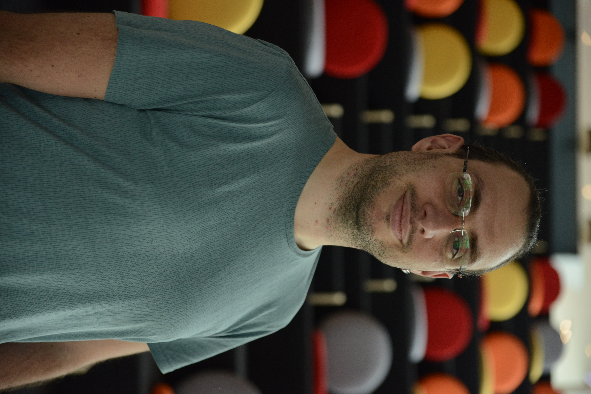

Fatih Tatoğlu
Merhaba ben Fatih. Kendimi meraklı bir geliştirici olarak tanımlamayı tercih ediyorum. Çocukken her şeyi sormam ve bu sorunların cevaplarını bulmak için çabalamam benim hayatımı şekillendi. "Öğrenmekten ve denemekten asla vazgeçme!" diyerek kendimi motive ediyorum.
Uzun lafın kısası, benim ile ilgi bazı bilgiler aşağıdadır.
- İstanbul, Türkiye'de yaşıyorum.
- Haydarpaşa Anadolu Teknik Lisesi Makina bölümünden mezun oldum.
- Bahçeşehir Üniversitesi Bilgisayar Mühendisliğinden mezun oldum.
- Programlamaya hobi olarak başladım, ancak ilk stajımdan sonra işim haline döndü.
- Hayatımdaki güzel şeylerin çoğunda benim yanımda olan harika bir eşim var.
- Yüzme ve tüplü dalış ile ilgilendim.
Benimle iletişime geçmek için, Linkedin üzerinden mesaj atabilirsiniz. GitHub hesabım üzerinden projelerimi takip edebilirsiniz.